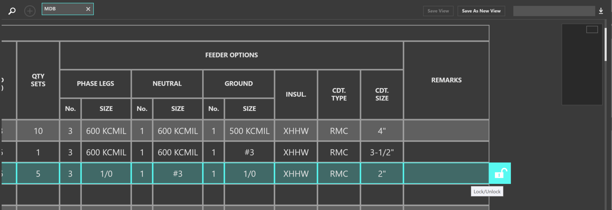

Schedules¶
Schedules are a tabular representation of your distribution system. Schedules are primarily used for Distribution Boards, Switchboards, and Panelboards. Not every piece of equipment has a dedicated schedule. For example, end of line equipment such as motors do not have schedules.
The top portion of the workspace shows all open schedules. Schedules can be exported to .csv or .dwg formats.
Specify board options like ground bus, isolated ground bus, etc., by clicking inside the textbox. Additional options for breakers can also be specified.
Other circuit properties like OCPD and conductor sizes are calculated based on the load.
Open Schedule¶
To open a schedule, either use the Search (Magnifying glass) button, or use the Add (+) button.
Copy / Copy / Paste Circuits¶
Once a schedule is open, to copy a circuit, select the circuit number. Selection will be highlighted in cyan.
CTRL+C to copy or CTRL+X to cut. The selection will highlight pink and be added to the clipboard.
Then, select the source or equipment to paste to, and click Paste or use CTRL+V. Equipment can be pasted between different schedules.
Delete Equipment¶
To delete equipment, select the circuit number. Click Delete (Trash Symbol) or use DEL to delete.
Reset to Code Minimum¶
If circuit properties are manually modified and generate flags, a designer can reset the circuit properties to be the code minimum value. Select the circuit number, then click Reset to Code Minimum (Wand Symbol).
Edit Properties¶
Select a circuit number, and then click the Edit Properties (Gear Symbol) to open the Properties Explorer.
Rehosting Equipment / Reordering Circuits¶
The ordering of circuits can affect the overall construction of the board. To move circuits or to change a circuits source, select the circuit number, and then click and drag the grip icon.
Lock / Unlock¶
A user can lock a selection which will prevent elements from being modified. Select a circuit number, and then click the Lock / Unlock (Lock Symbol) button.
Adding OCPDs¶
The amount of protective devices a distribution board supports is proportional to its physical installation. Equipment can not be added to the distribution board unless there is space alotted. To add a protective device, click Add OCPD.
Converting Breaker/Switch and Fuse¶
By default, Distribution Boards use breakers as their protective devices, while Switchboards use switch and fuse combinations. To convert a board’s protective devices, click the Settings (Gear Symbol) button in the top left of the schedule. Then under Change Schedule Type, select Convert to Switch/Fuse.
Schedule Views¶
Groups of schedules can be saved for a later viewing. Open the schedules to group, then click Save As New View, and enter a name. Return to this view at any time.

Exporting¶
To export the open schedules, click Export (Down Arrow) button in the top right of the workspace. Then choose Excel or AutoCAD to export to .csv or .dwg.